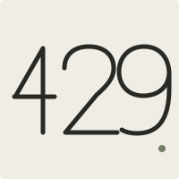

touch + turn
touch + turn
The Sensory Stones
Pick the texture your thumb keeps returning to.

first dropSystem status: too many requests
Squeeze it. Turn it. Click it. Rub it. Flip it.
Low-stimulation objects for restless hands, long meetings, difficult thoughts, and screen-heavy days.
reduce inputManual input
encouraged.
The first drop
A small test batch is taking shape. Filter by the movement your hands are asking for.
Shop by movement
touch + turn
Pick the texture your thumb keeps returning to.
 squeeze
squeeze
Squish it flat. Watch it find itself again.
 click
click
Silent, soft, or crisp. Your click, your rules.
 grip + squeeze
grip + squeeze
A little resistance. A lot for your hands to do.
 flip + turn
flip + turn
Choose a side. Put down your phone. Begin.
Prototype note / Temporary sourcing images. Original product photography will replace them before launch.
Why this exists
Your mind isn’t broken.
It’s processing too many requests.
Every empty moment becomes a reason to check a screen. Waiting. Thinking. Reading. Working.
The hand reaches first. Scroll. Tap. Refresh.
Maybe the answer isn’t perfect stillness. Maybe it is one quiet, physical thing.
Reduce input. Keep one thing real.
About me
I’ve spent ten years as an infrastructure engineer—keeping complicated systems running while feeling increasingly stuck inside them.
My attention was stretched across alerts, tabs, messages, feeds, and everything else asking to be checked. Each thing was small. Together, they were endless.
I went looking for low-stimulation objects I could keep beside my keyboard. Most of what I found was loud, childish, ugly, or trying too hard to fix me.
I wasn’t looking for another productivity system.
I wanted objects quiet enough for my desk, interesting enough for my hands, and real enough to keep me away from another screen. So I started collecting them myself. I called it 429: the system response for too many requests.